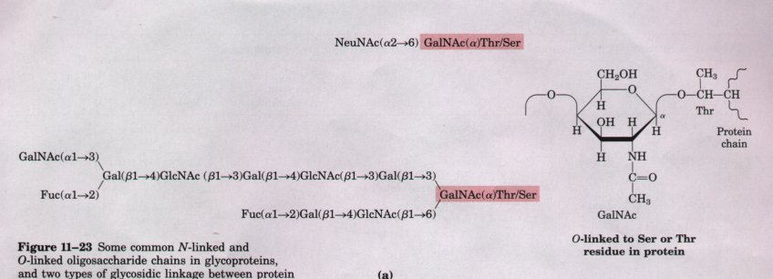
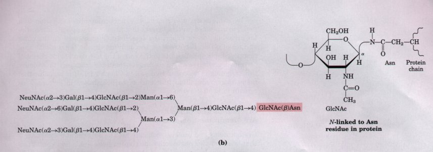

We saw in Chapter 10 that many membrane proteins and certain classes of membrane lipids have more or less complex arrays of covalently attached oligosaccharides; these are glycoproteins and glycolipids. Most proteins that are secreted by eukaryotic cells are also glycoproteins. The biological advantage in the addition of oligosaccharides to proteins or lipids is not fully understood. The very hydrophilic clusters of carbohydrate alter the polarity and solubility of the proteins or lipids with which they are conjugated. Oligosaccharide chains attached to newly synthesized proteins in the Golgi complex may also influence the sequence of polypeptide-folding events that lead to the tertiary structure of the protein (see Fig. 7-22). Steric interactions between peptide and oligosaccharide may preclude one folding route and favor another. When numerous negatively charged oligosaccharide chains are clustered in a single region of a protein, the charge repulsion among them favors the formation of extended, rodlike structure in that region. The bulkiness and negative charge of oligosaccharide chains also protect some proteins from attack by proteolytic enzymes.


Figure 11-23 Some common N-linked and O-linked oligosaccharide chains in glycoproteins, and two types of glycosidic linkage between protein and oligosaccharide. (a) The O-glycosidic bond to the hydroxyl group of Ser or Thr side chains.(b) The N-glycosidic bond to the nitrogen of the Asn side chain. The protein-linked ends of the oligosaccharides (shaded in red) are shown in detail on the right.
Beyond these global physical effects on protein structure, there are more specific biological effects of oligosaccharide chains in glycoproteins and glycolipids. We have noted earlier the difference between the information-rich linear sequences of nucleic acids and proteins and the monotonous regularity of homopolysaccharides such as cellulose (see Fig. 3-15). The oligosaccharides attached to glycoproteins and glycolipids are generally not monotonous, but are enormously rich in structural information. Consider the oligosaccharide chains in Figure 11-23, typical of those found in many glycoproteins. The most complex of those shown contains 14 monosaccharide units, of four different kinds, variously linked (1→2), (1→3), (1→4), (1→6), (2→3), and (2→6), some with the α and some with the β configuration. The number of possible permutations and combinations of monosaccharide types and glycosidic linkages in an oligosaccharide this size is astronomical. Each of the oligosaccharides in Figure 11-23 therefore presents a unique face, recognizable by the enzymes and receptors that interact with it.
Because the analysis of oligosaccharide structure is much more difficult than the determination of the linear sequence of bases in nucleic acids, or of amino acid residues in proteins, the oligosaccharide structures of relatively few glycoproteins are known. From the few known structures, it is already clear that a given protein may have several different types of oligosaccharides attached at different positions, and that different glycoproteins have different oligosaccharides. Cells apparently use complex oligosaccharides to encode information about how a protein will fold, where in the cell it will be located, and whether it will be recognized by other proteins. We present here a few examples to illustrate this point.
The carbohydrate chains covalently attached to glycoproteins are generally oligosaccharides of much lower molecular weight than the glycosaminoglycans discussed above. The carbohydrate portion commonly constitutes from 1% to about 70% of a glycoprotein by weight, and never 99% as in the proteoglycans. Some glycoproteins have only one or a few carbohydrate groups; others have numerous oligosaccharide side chains, which may be linear or branched (Fig. 11-23). Many of the proteins of plasma membranes are glycoproteins, with their oligosaccharide moieties invariably located on the external surface of the membrane. One of the best-characterized membrane glycoproteins is glycophorin of the erythrocyte membrane (see Fig. 10-8), which contains 60% carbohydrate by weight in the form of 16 oligosaccharide chains (totaling 60 to 70 monosaccharide units) covalently attached to residues near the amino terminus of the polypeptide chain. Fifteen of the oligosaccharide units are O-linked to Ser or Thr side chains, and one is N-linked to an Asn residue, two basic types of linkages in glycoproteins (Fig. 11-23; see also Fig. 10-3). Many soluble glycoproteins are also known, including certain carrier proteins and immunoglobulins (antibodies) in the blood of vertebrates, and many of the proteins contained within lysosomes.
The sialic acid (NeuNAc) residues (see Fig. 11-9) found at the ends of the oligosaccharide chains of many soluble glycoproteins (Fig. 11-23) carry a message that determines whether a given protein will continue to circulate in the bloodstream or be removed by the liver. For example, ceruloplasmin is a copper-transporting glycoprotein in the blood of humans and other vertebrates. It has several oligosaccharide chains that end in sialic acid. When these terminal sialic acid units are lost, ceruloplasmin rapidly disappears from the blood. The plasma membrane of hepatocytes has specific binding sites for glycoproteins lacking sialic acid, known as asialoglycoprotein receptors. Glycoproteins bound by these receptors are taken up by the hepatocytes and degraded in lysosomes. Ceruloplasmin is only one of many sialoglycoproteins whose removal from the bloodstream is triggered by the loss of sialic acid units.
Removal of sialic acid is probably one of the ways in which the body marks "old" proteins for destruction and replacement. A similar mechanism is apparently responsible for removing old erythrocytes from the circulation of mammals. Newly synthesized erythrocytes have several membrane glycoproteins with oligosaccharide chains that end in sialic acid. When the sialic acid residues are removed experimentally (by withdrawing blood, treating it with sialidase in vitro, and reintroducing it into the bloodstream), the erythrocytes disappear from the bloodstream within a few hours, whereas cells with intact oligosaccharides continue to circulate for days.
In some cases, attachment of a particular oligosaccharide to a newly synthesized protein targets that protein for a specific intracellular organelle, or for export (by secretion) or placement on the outer surface of a cell. For example, the addition (in the Golgi complex) of mannose-6-phosphate units to the end of the oligosaccharide chains of certain degradative enzymes targets them for transport to lysomes; this targeting is described in detail in Chapter 26. It is probable that many more recognition functions of carbohydrates in glycoproteins remain to be discovered.
Glycoproteins and proteoglycans are not the only cellular components that bear complex oligosaccharide chains; some lipids, too, contain covalently bound oligosaccharide chains. In gangliosides (see Fig. 9-9), the polar head group is a complex oligosaccharide containing sialic acid and other monosaccharide units. Lipopolysaccharides are major components of the outer membrane of gram-negative bacteria such as E. coli and Salmonella typhimurium. The lipopolysaccharides of S. typhimurium contain six fatty acids bound to two glucosamine residues, one of which is the point of attachment for a complex oligosaccharide (Fig. 11-24). Lipopolysaccharides are the dominant surface feature of gram-negative bacteria; they are prime targets of the antibodies produced by the immune system in response to bacterial infection. The lipid A portion of the lipopolysaccharide of some bacteria is toxic to humans and other animals; for example, it is responsible for the dangerously lowered blood pressure that occurs with toxic shock syndrome in gram-negative bacterial infections of humans.